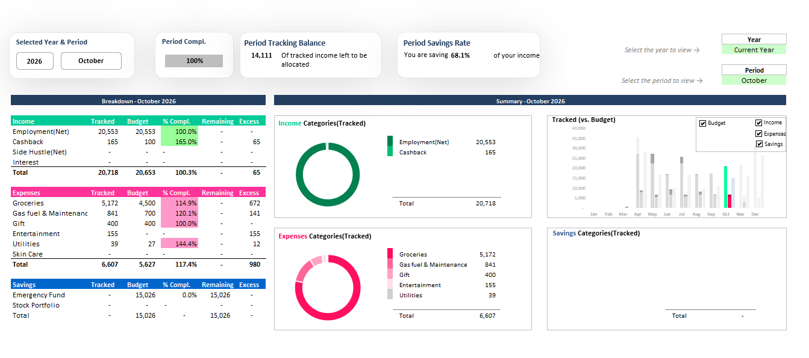

Ultimate Budget Template

Ultimate financial planning: a personal budget template in Excel with a zero-based plan, actual tracking and an interactive dashboard.
What I built
A single workbook that plans the budget, tracks real transactions against it, and reports the result on a dashboard where I pick any year and any month (or the whole year).
Workbook structure
- Settings. Starting year, an optional "shift late income" rule (income received on or after a chosen day counts toward the next month), and the choice of how the savings rate is calculated.
- Budget Planning. Three Excel Tables (
Income,Expenses,Savings) with a budget amount per category per period, plus total rows. - Budget Tracking. One Table,
Tracking, with Date, Type, Category, Amount, Details, a running Balance and an Effective Date. - Calculations. The engine room: selected year and period, days passed, tracking balance, savings rate and the data feeding the charts.
- Budget Dashboard. The breakdown tables, KPI tiles, three donut charts and the tracked vs. budget column charts.
Step by step
- Budget Plan Setup. Build a zero-based, multi-period plan with monthly dates generated by
DATEand totals bySUM(INDIRECT(ADDRESS(...))), so totals follow the Table size automatically. - Budget Tracking Setup. Log each transaction in the
Trackingtable. The Category dropdown depends on the Type through data validation withINDIRECT, and the Balance usesSUMPRODUCT. - Dashboard: Initial Setup. Add Year and Period selectors ("Current Year" / "Total Year" / "Current Month" are special values), and resolve them in Calculations into
selected_yearandselected_period. - Dashboard: Breakdown Section. For each category, pull Tracked from the
Trackingtable and Budget from the plan, then compute % Compl., Remaining and Excess. - Dashboard: Category Distribution Charts. Rank categories by tracked amount (ties broken by budget) so the donut charts show the top five and group the rest as "Other".
- Dashboard: Tracked vs. Budget Chart. Column charts by month, with checkboxes to show or hide Income, Expenses, Savings and Remaining Budget.
- Dashboard: Performance KPI Tiles. Period completion, period tracking balance, and period savings rate.
- Finishing Touches. Conditional formatting, number formats and a final check of every selector.
Key formulas
| Purpose | Functions |
|---|---|
| Running balance | SUMPRODUCT over the Tracking table, adding income and subtracting everything else up to each row's date |
| Late income shift | IF, AND, DAY, DATE: moves income to the first day of the next month |
| Selected period | IF, YEAR, MONTH, TEXT, EOMONTH |
| Budget lookup | INDEX + MATCH on the plan's period headers |
| Dynamic ranges | INDIRECT + ADDRESS + COLUMN |
| Auto-sorted categories | RANK + COUNTIF to build a unique rank, then INDEX + MATCH to read in sorted order |
| Savings rate | IFERROR: either savings ÷ income, or (income − expenses) ÷ income, chosen in Settings |
| Tracking balance note | IFNA + INDEX + MATCH on the last record date, with DAYS for "days ago" |
Name Manager
| Group | Names |
|---|---|
| Selection | selected_year, selected_period, selected_period_display, current_date |
| Settings | Starting_Year, shift_late_income_status, shift_late_income_starting_day, savings_rate_calculation_type |
| Table positions | income_header_row, income_min_row, income_max_row, income_total_row, and the same set for Expenses and Savings |
| Row helpers | row_id, is_header, is_total, is_cat, is_empty, type, item, tracked, budget |
| Ranking | tracked_rank, budget_rank, comb_rank, comb_rank_unique |
| Dashboard output | out_tracked, out_budget, out_percentage_completed |
| Chart data | cc_type, cc_tracked, cc_budget, cc_delta, cc_in_focus, cc_month_number |
Many of these names point to a whole column with a relative row (for example tracked refers to column K of the current row), so formulas read like plain English.